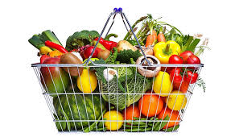
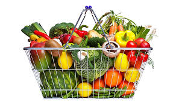

Seeds for farmer
For farmers, seeds are the cornerstone of successful agricultural practices, directly influencing crop yield and quality. Selecting the right seeds—whether hybrid, heirloom, or genetically modified—can determine the resilience of plants against pests, diseases, and varying climate conditions. Farmers often consider factors such as soil type, climate, and market demand when choosing seeds, ensuring they align with their specific farming goals. Additionally, proper seed treatment and storage are essential for maximizing germination rates and minimizing losses. Advances in seed technology, such as precision breeding and drought-resistant varieties, provide farmers with innovative options to enhance productivity and sustainability. Ultimately, investing in high-quality seeds not only boosts harvests but also plays a vital role in food security and the overall health of agricultural ecosystems.
Seeds of vegetables available
| sl.no |
seeds |
| 1 |
carrot |
| 2 |
cabbage |
| 3 |
chilly |
| 4 |
potato |
Seeds of fruits
| sl.no |
fertilizers |
| 1 |
apple |
| 2 |
orange |
| 3 |
cherry |
| 4 |
grape |
ON TRENDING
- grapes
- carrot
- chilly
- potato
- cherry


 
